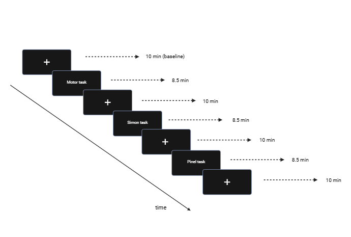
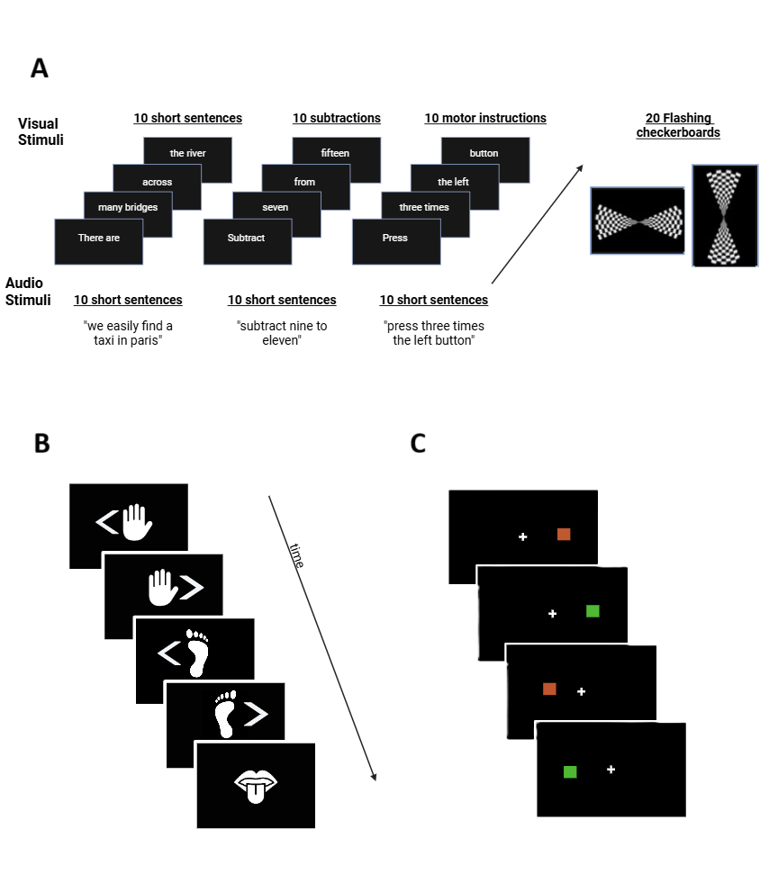
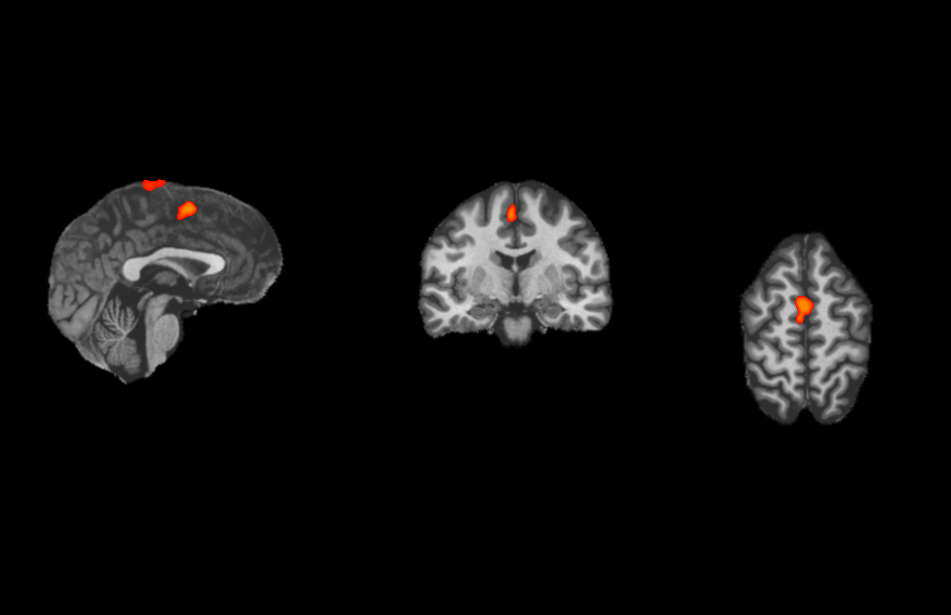
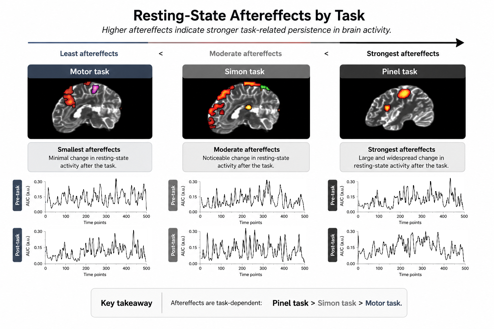

1. Scanning session
Participants completed multiple resting-state and task-based fMRI runs across repeated sessions.
fMRI · Resting-state · Cognitive aftereffects
Can cognitive tasks alter the brain’s activity even after they have ended?
Explore the studyThe brain may not return to baseline immediately after cognitive effort. This project investigates whether lower and higher cognitive functions leave measurable signatures in subsequent resting-state fMRI activity.
Participants completed multiple resting-state and task-based fMRI runs across repeated sessions.

The experiment included tasks engaging lower and higher cognitive functions, including motor and cognitive-control processes.

Task-based activation maps were used to identify functional regions involved during each cognitive task.

Resting-state activity before and after task performance was compared to investigate neural persistence and task-related aftereffects.

Task engagement may influence brain activity beyond the task itself.
Different cognitive functions may produce different resting-state aftereffects.
This may help us understand mental fatigue, recovery, and brain adaptation.
Ioanna Prakate
MSc Neuropsychology · Maastricht University
Interested in fMRI, neuroimaging, and clinical neuroscience.